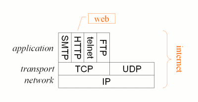

LIVELLO APPLICATIVO
Il livello di applicazione è il settimo ed ultimo livello del modello ISO/OSI.
La sua funzione è quella di interfacciare e fornire servizi per i
processi delle applicazioni.
Si occupa di implementare le applicazioni di rete usate dall'utente.

I protocolli che troviamo a questo livello possono seguire un modello Client-Server oppure uno Peer-to-Peer. Alcuni protocolli del livello applicativo sono: